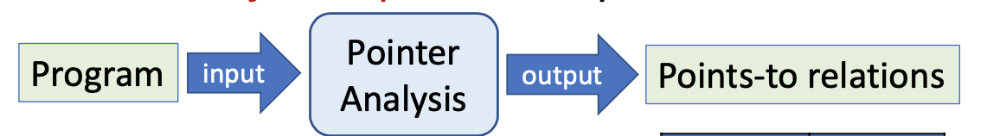
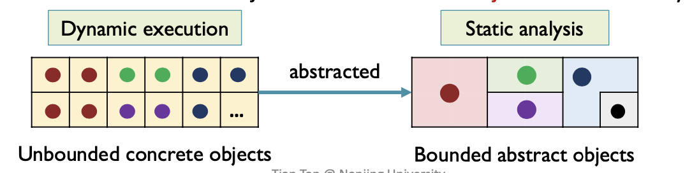
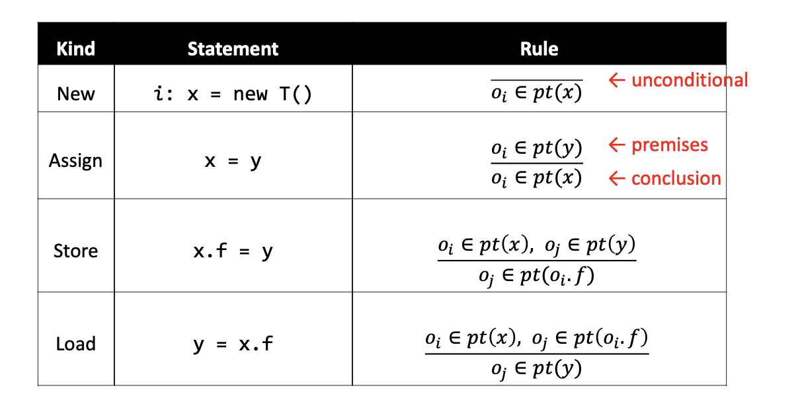
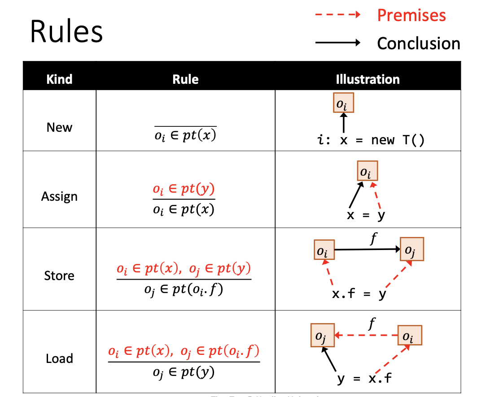
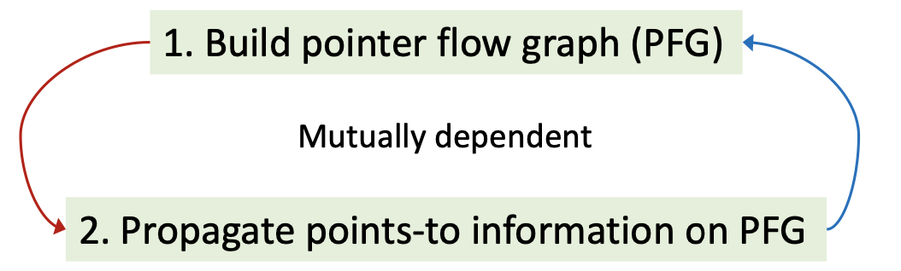
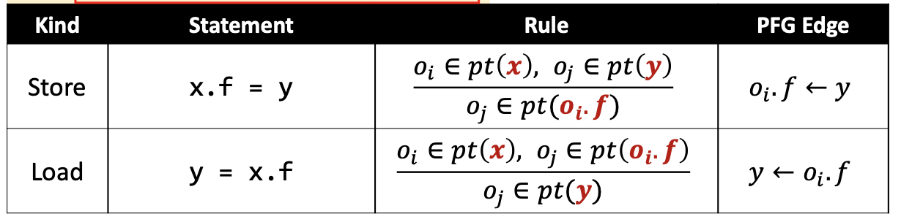

Abstract
过程间分析需要基于程序的
Call Graph来完成。由于CHA Analysis过度追求速度造成误报——而false positive对于常量传播这样的must分析来说是不可接受的。因此指针分析在POPL'1980被第一次提出Interprocedural Data Flow Analysis in the Presence of Pointers, Procedure Variables, and Label Variables。Pointer Analysis computes an over-approximation of the set of which memory-locations(objects) a pointer can point to.
指针分析除了可以构建
Call Graph等程序基本信息之外，还可以用于编译优化，程序鲁棒性和安全等各个领域，是最基础的静态分析算法之一——比如流行的别名分析Alias Analysis就是从指针分析中派生出来的:Alias information can be derived from points-to relations.在指针分析的输出指向关系中是否有两个指针可以指向同一个对象。
Introduction
指针分析是一种
may分析，输入时整个程序，分析结果的输出是类似于map的一系列指向关系Points-to relations。
KeyFactors
作为一项比较复杂的技术，指针分析框架的精度和速度取决于四个很主要的因素：
Factor Problem Choice Heap abtraction How to model heap memory? Allocation-site/Storeless Context sensitivity How to model calling contexts? Context-sensitive/Context-insensitive Flow sensitivity How to model control flow? Flow-sensitive/Flow-insensitive Analysis scope Which parts of program should be analyzed? Whole-program/Demand-driven Heap Abstraction
如何抽象堆操作，比如循环和递归会在动态运行时创建很多的堆对象，如何将这些
unbounded的操作进一步简化抽象成finite的静态分析对象。
学术界有两个流派来完成堆抽象：
Store based model和Storeless model。本节课介绍第一个流派下面的Allocation sites方法来对所有堆对象完成建模——One abstract object per allocation site。即每一个分配点new的堆对象都抽象到一个object中。Context Sensitivity
在函数调用的时候会产生上下文
context。一个method被调用多次的话如何对每一次的上下文进行抽象。关于上下文抽象也有两种流派:
Context-sensitive: 对每一次调用都区别对待，具体调用具体分析Context-insensitive: 对一个method的所有调用都merge到一起，一次性处理上下文敏感是提高静态分析效率非常有效的工具之一，是这门课需要讨论的重点。
Flow Sensitivity
如何对控制流抽象，也有两种流派：
Flow-sensitive: 确保程序的执行顺序execution order，维护每一个程序点的points-to relations表Flow-insensitive:忽略执行顺序，维护整个程序的指向表目前学术界还没有直接研究表明
flow sensitivity相比于flow insensitivity对Java这样的OOP语言会有多少优势。Analysis Scope
在进行指针分析的时候，如何选取需要分析的程序段？
- Whole-program
- Demand-driven
是直接分析整套程序还是以需求为驱动进行特定程序片段的分析。实际上如果需求很多的话，单独分析的复杂度和直接进行整套程序分析的复杂度不相上下。
Concerned Statements
上述的
Key Factors是具有全局性质的-即针对整个指针算法框架，那在实现上-即针对Java编程语言的具体指针分析框架来说，更细粒度的Concerned Statements会是什么呢？Pointers in Java
首先需要总结一下
Java中所有可以用作指针的声明。
Local variable：xStatic field: C.fInstance field: x.fArray element: array[i]共有4中具体的指针类型——
static field是一种全局变量。数组元素在分析时可以忽略掉索引，看成是可以指向任何数组元素field的指针类型array.arr，因此也被看成是一种Instance field。综上来看，针对Java语言的指针分析主要处理Local variable和instance field两种指针类型。Pointer-Affecting Statements
明确了指针分析研究对象
Pointers的具体类型之后，继续思考全程序的指针分析如何更具体的完成实现？就语句本身来说例如if/for/break这样的控制流并不会对指针分析的结果造成影，我们需要关注真正的pointer-affecting statements如下：
New: x = new T()Assign: x = yStore: x.f = yLoad: y = x.fCall: r = x.k(a, ...)重点关注virtual calls
Foundations
Rules
Domains and Notations
指针分析是一种以指向关系作为传递信息的数据流分析。所以其理论也需要引入域和某些符号解释：
- Variable: x, y ∊ V
- Fields: f,g ∊ F
- Objects: oi,oj ∊ O (Allocation sites)
- Instance fields: oi.f, oj.g ∊ O⨉F
- Pointers: Pointer = V⋃(O⨉F)
其中Variable表示程序中的所有变量指针类型。Object和Fields分别指的是程序中分配堆对象的创建点和抽象堆对象中的域——对象和域组合起来的Instance Fields也表示程序中一种指针。Pointers指的是程序中所有的
variable和instance field——V ⋃ (O x F)。最后引入指向关系
pt(其本身就是一种映射， 代表指针可能指向的对象的集合)：
- Points-to relations:
pt: Pointer ⟶ 𝓟(O)
𝓟(O)表示对象O的powersetpt(p)表示指针p的指向关系集合理解上，指针指向对象——指针p的值域就是
V ⋃ (O x F)，对象o的值域就是𝓟(allocation sites)。p⟶o ≡ o∊pt(p)即指针p指向对象o等价于对象o属于指针p的指向关系集合。在此基础上，引入如何处理
Pointer-Affecting Statements的形式化Rules：
分数上面是前提
premise而下面是结论conclusion。
New:
New规则中的oi 表示一个Allocation site在这一点创建出来的对象，那么指针分析如何处理一个New语句——即执行完这条语句后让x指向oi即oi ∊ pt(x)。Assign: 如果oi属于y的指向集，那在执行完这条语句后oi则需要加入到x的指向集中。
Store: 将新对象保存到该对象的一个域f——如果x指向oi而y指向oj，那执行完这条语句之后oi.f需要指向oj。
Load: 将某个对象的域f加载到新对象中——如果x指向oi而oi的域f指向oj，那执行完后将oj加入到y的指针集当中。
How to Implement Pointer Analysis
在确定好Domain和Rules之后开始明确如何实现全程序的指针分析算法。
Essentially，pointer analysis is to propagate points-to information among pointers(variables & fields).
在两种指针(
variable和fields)之间根据Pointer-Affecting Statements建立和传递指向关系points-to。从另一个角度来说指针分析就是在解决指针之间的inclusion constraints即对于x = y语句指针x一定包含指针y的所有指向信息。而关键的是当pt(x)更新时，这些改变也需要传递给x的其他相关指针。而在实现上，我们用
Graph来连接相关联的指针，当pt(x)更新时，将更新的数据流（数据流分析根据Domain不同而不同，指向关系也是一种数据流信息）传递给x的后继元素，这个图就是Pointer Flow Graph。Pointer Flow Graph(PFG)
一个程序的
PFG是一种表示points-to信息如何在pointers之间流动的有向图，图中的节点代表了V ⋃ (O ⨉ F)——变量或者抽象对象(因为PFG是静态分析建立的，所以是抽象的堆对象)的域，边代表了对象在指针之间的流动关系Pointer ⨉ Pointer——比如x⟶y代表了指针x的指向对象集合可能(指针分析是may分析)会流动到y的指向集合。PFG中的节点就是程序中的各种指针，而边是根据指针分析的Rules建立的。

有了PFG，指针分析问题就可以看成是在PFG上求其传递闭包的问题，比如PFG中a点到b点是可达的，那a中的数据流信息就可以直接流到b节点上。
综上，指针分析的思路主要有两部分：创建PFG——>在PFG上传递指向信息。而难点在于这两者是互相依赖的。为什么创建PFG也会依赖指向信息呢？

因为在处理
instance fields的指向关系的时候，前提是需要知道这些field的object的指向信息——由allocation sites更新得到。因此PFG本身也是随着指针分析的过程动态更新的。
Algorithm
本节具体实现数据流分析算法，首先是使用到的数据结构：
S: 输入程序的语句集合WL: work list存储了需要处理的指向关系pair，其中每一项<n,𝓟(O)>*意味着在𝓟(O)中的信息需要传递给n的指向关系集合pt(n)中，用PFG: 有向图，表示成为边的集合，其中s⟶t表示s的指向关系流向t的指向关系Hybrid-Set: 用来存在pt(s)，即当元素小于16时用HashSet大于16时用BitVectorMain Algorithm
2
3
4
5
6
7
8
9
10
11
12
13
14
15
16
17
18
19
20
21
22
23
24
25
26
27
28
29
30
31
32
33
34
> WL = [], PFG = {}
> foreach i: x=new T() ∊ S do //处理New语句
> add <x, {O_i}> to WL
>
> foreach x=y ∊ S do //处理Assign语句
> AddEdge(y, x)
>
> while WL is not empty do
> remove <n, pts> from WL
> 𝚫 = pts - pt(n)
> Propagate(n, 𝚫)
> if n represents a variable x then
> foreach o_i ∊ 𝚫 do
> foreach x.f=y ∊ S do
> AddEdge(y, o_i.f) //处理Store语句
> foreach y=x.f ∊ S do
> AddEdge(o_i.f, y) //处理Load语句
> }
>
> AddEdge(s, t) { //构建PFG
> if s⟶t ∉ PFG then
> add s⟶t to PFG
> if pt(s) is not empty then
> add <t, pt(s)> to WL
> }
>
> Propagate(n, pts) { //更新pt(x)
> if pts is not empty then
> pt(n) ⋃= pts //核心： 传递数据流
> foreach n⟶s ∊ PFG do
> add <s, pts> to WL
> }
>
AddEdge
首先每一条
New语句生成一条指向关系完成对WL的初始化。
AddEdge函数主要是通过处理Assign语句构建PFG。每一条s⟶t都对应着图上一条边，根据指针分析的inclusion constraints原理将<t, pt(s)>加入WL中实现把指针s的指向集合加到指针t中。Propagate
在构建完最基础的的
PFG之后，算法进入While循环开始迭代处理WL中的指向关系。取出一项<n, pts>，过滤掉指针s指向关系中指针n已经存在的抽象对象即𝚫=pts-pt(n)——主要是为了避免更多的冗余操作已达到Differential Propagation然后开始
Propagate函数，这个函数是真正修改了指针的指向关系即完成数据流的传递，换句话讲指针分析的过程就是在迭代过程中不断向pts中加入新的数据流。而进入到函数内的𝚫是真正需要传递给n的指向集合，接着又根据inclusion constraints需要把指针n刚更新过的指向集合加到其在PFG上的后继中，故遍历整个图找到所有的后继节点s并把<s, pts>加到WL中等待下一轮更新。Differential Propagation
查分传播是为了避免处理冗余的指针信息。这是因为在
PFG上任意点的指向集合信息pt(n)一定已经传播到了其后继元素，没有必要在传播一次。在整个算法中一共有两处查分传播，分别是在𝚫=pts-pt(n)语句以及处理Store/Load语句的代码片段foreach O_i ∊ 𝚫 do。首先
Store/Load语句映射到PFG上的操作正好相反：
Store：x.f=yoi.f ⟵ yLoad: y=x.fy⟵ oi.f关键是需要知道指针
x指向的抽象对象o_i然后继续操作。而foreach o_i∊𝚫 do正好清除掉指针x以前的指向信息而保留了这次迭代中新加入的抽象对象。
就
Store/Load语句本身而言也是通过AddEdge的方式来更新PFG的，但这里要注意的是因为有可能两个变量会指向相同的抽象对象oi，即虽然oi对于x来说是新加入的指向信息，但是有可能在前几次迭代中有z.f=y中的指针z也指向抽象对象oi，即因为指针oi.f中oi是一个对象——有可能会被多个指针指向，因此这里的AddEdge操作不能保证一定会引入新的PFG边。Fixed Point
算法符合不动点原理——
WL的功能就是向pt中添加信息，而核心pt(n) ⋃ =pts之后如果直接检查合并前后pt集合是否有变化也以判断达到不动点。